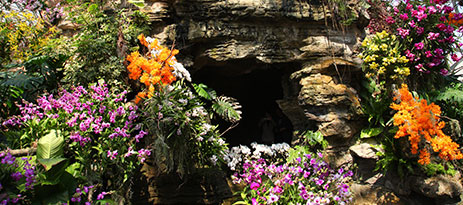
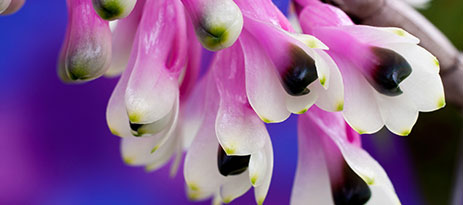
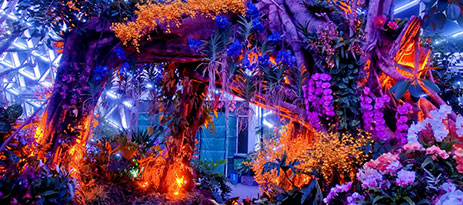
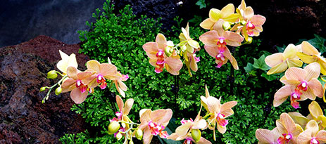
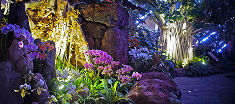
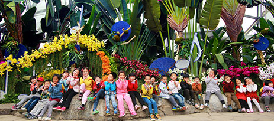

- 
兰花园
泰兰风情
东南亚风格景点布置，饱含“水灯节”元素的泰国东南亚风情，通过水
面漂浮花灯、梦幻花车来体现泰国传统文化及风情
展示地点：热带花果馆（A馆）
- 
个体兰花精品展
独兰殊胜
世界各地个体精品兰花展示
展示地点：沙生植物馆（B馆）
兰森林
野兰幽韵
将野生兰花与自然环境相结合，以自然、森林为主题，重点展示兰花的
自然野生生境风貌。参与景点布置的国家和地区主要有：西班牙、英国、
意大利、厄瓜多尔、台湾等
展示地点：珍奇植物馆（C馆）- 
兰艺生活馆
兰花与健康生活
以集装箱展示形式，诠释石斛、金线莲、香荚兰、国兰、白芨、天麻等
药用、食用兰花与人们“衣食住行”的关系，宣传和科普兰花知识
展示地点：绿色剧场新建展棚（D馆）
- 
花仙子巡游
漂亮的花仙子和她的动物、昆虫朋友们来到了美丽的上海辰山植物园与大
家亲密互动。游客们还可在绿色剧场花墙前与她们合影留念。
婚纱花艺秀
五一期间来上海辰山植物园的游客们，不仅能欣赏到美丽的兰花展，参与
节假日主题活动外，在5月1日、2日两天，还能观赏婚纱花艺展示。届时，
园方特邀靓丽的新娘模特，穿上用鲜花扦插的漂亮婚纱，开展婚纱花艺秀
迎宾、走秀、花车巡游等婚纱花艺展示活动。
- 
寻访幽兰探险记
开展“寻访幽兰”科普活动，现场设置森林营地、草原营地、沙漠营地、
沼泽营地、高山营地、湖岛营地等六个帐篷营地，通过开展亲子游戏、自
然体验、生境观察、生态理念问答和行动等互动活动，让小朋友们亲近自
然，感受自然，爱上自然。
- 
辰山亲子主题昆虫跑
住在辰山植物园内的小王子不小心误食了毒蘑菇而昏迷不醒，小朋友们需
要化身各种昆虫，佩戴昆虫头饰、穿上昆虫服饰，带上生命之水，踏上拯
救小王子的危险旅程。沿路会遇到各种障碍和困难，需要在父母的帮助下
完成各种挑战任务和互动游戏，沿途还有美丽的辰山春景、兰花卡通科普
展板等可供观赏、学习，寓教于乐。
便民信息：
1、辰山市集
兰展期间，开设辰山市集作为临时配套餐饮服务场所。通过制定改造方案，对辰山市集进行整体设计、策划、规划布局等，让市集容貌焕然一新，同时在辰山市集内设置医疗、问询、休憩、购物、互动活动等功能。同时，在辰山植物园2号门外搭建临时帐篷，开设商品销售区,向游客售卖各类花卉、盆栽、纪念品等。
2、游客服务
（1）交通短驳车
兰展期间，每日开通地铁9号线洞泾站往返辰山植物园1号门的免费公交直达车。其中，周末及节假日每日开通6辆车。短驳车时间间隔为20分钟/班次。
（2）讲解服务
实行党员志愿者加学生志愿者服务机制，组建成“金童”、“玉女”专兼职导游讲解员队伍。兰展期间在洞泾站、园内各景点为游客提供免费讲解服务。
（3）电子书籍
与上海图书馆合作，在一号门开设“爱阅读”电子书籍免费下载服务。
（4）寄存服务
在一号门及二号门游客服务中心提供游客储物柜服务。
（5）临时医疗点
兰展期间，在温室共享空间内的游客中心及辰山市集内设立临时医疗服务点。
3、餐饮服务
园内设有2处绿色餐厅，1号门综合楼二层提供中式菜肴，展览温室共享空间内提供西式快餐，团队订餐电话021-67657779。咖啡吧：位于1号门综合楼一层，提供冷热饮和西点。小卖部：全园共有6处，售卖饮料和零食。
4、门票信息
花展期间，上海辰山植物园门票价格不变。普通票60元/ 人，60-70岁老年人50元/人，70岁以上老年人30元/人，6-18岁未成年人和在校学生30元/人，6周岁以下或身高1.3米以下儿童、离休干部、现役军人和残疾人免票。
团体游客由旅行社提前预约享受团体优惠票价，咨询电话：400-1161-808、021-60561635。
5、来园交通
公共交通
1. 轨道交通9号线洞泾站换乘松江19路、19路区间可至1号门。
2. 松江19路区间、松朱线可至2号门。
3. 松江19路区间可至3号门。
4. 轨道交通9号线佘山站和1号门提供免费租赁自行车服务。
5. 佘山旅游度假区绿色免费巴士停靠1号门和3号门。
6. 上海旅游集散中心直达专线车。
7. 松江双层观光巴士旅游1线，仅在双休日和法定假日运营。
自驾车
1. G60 沪昆高速公路松江新城出口沿嘉松公路向北至辰花路左转到达1号门，至沈砖公路左转到佘天昆公路左转到达2号门。
2. G50 沪渝高速公路赵巷出口左转沿嘉松公路向南至辰花路右转到达1号门，至沈砖公路右转到佘天昆公路左转到达2号门。
6、联系电话
咨询热线：021-37792288-800
投诉电话：021-67657812
应急电话：021-67657770
其他更多基础信息请关注上海辰山植物园官方网站（www.csnbgsh.cn）。